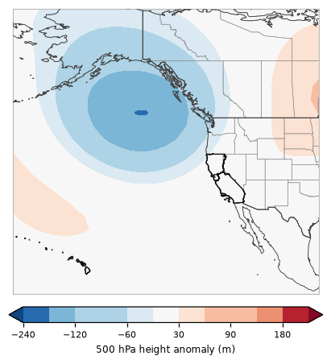

One of 6 recurring 500 hPa patterns over the eastern Pacific and western U.S. in California's fire seasons, 2001–2025 · 12% of season days

This pattern has a ridge (heights +63 m above normal) centered near the northern Rockies and a trough (-182 m) centered near the northeast Pacific, with near-normal heights over California.
Documented fire-weather patterns it goes with: Northern California southwest foehn winds (×1.6 as common on those days); Southern California sundowner winds (×1.5 as common on those days). How these line up with CEFA and the Synthesis of Knowledge of Extreme Fire Behavior.
Pyroconvection (23 studied California fires, 491 fire days): 0 pyroCb and 4 pyroCu days in Regime E. Which days.
The map is the average 500 hPa (~18,000 ft) height anomaly over every day assigned to this regime: red = higher than normal (ridge), blue = lower than normal (trough). Upper-level ridges bring sinking, warming, drying air; troughs bring cooler air, onshore flow and the chance of showers or thunderstorms, and the wind shifts and dry northerly flow that can follow them.
Share of each month's days (2001–2025) in Regime E.
Odds of a fire day with at least this much satellite-mapped growth, compared with the usual odds for the same time of year.
| Region | ≥1,000 ac | ≥5,000 ac | ≥10,000 ac |
|---|---|---|---|
| Northern California | ×0.74 | ×0.58 | ×0.60 |
| Southern California | ×0.74 | ×0.77 | ×0.86 |
| California | ×0.73 | ×0.66 | ×0.66 |
×1.00 = no different from usual; ×1.5 = half again as likely; ×0.6 = 40% less likely. A single 500 hPa pattern is only a modest signal on its own: lightning, wind events and fuel dryness matter a lot.
| Fire day | Acres (CA) | Largest fires that day |
|---|---|---|
| 2020-08-19 | 383,053 | HENNESSEY (LNU LIGHTNING COMPLEX) (112,982 ac), SCU LIGHTNING COMPLEX (92,383 ac), AUGUST COMPLEX (90,112 ac) |
| 2020-08-20 | 206,607 | SCU LIGHTNING COMPLEX (70,633 ac), AUGUST COMPLEX (44,929 ac), COLES FLAT (25,622 ac) |
| 2008-06-22 | 148,135 | LONG BRANCH-JACK (BTU LIGHTNING COMPLEX) (14,846 ac), BASIN COMPLEX (13,341 ac), MOON (SHU LIGHTNING COMPLEX) (11,191 ac) |
| 2020-08-21 | 112,569 | SCU LIGHTNING COMPLEX (35,551 ac), AUGUST COMPLEX (21,646 ac), COLES FLAT (11,295 ac) |
| 2020-08-16 | 79,346 | DOME (32,245 ac), LOYALTON (16,796 ac), SCU LIGHTNING COMPLEX (13,919 ac) |
| 2008-06-23 | 71,174 | BASIN COMPLEX (15,447 ac), IRON (IRON & ALPS COMPLEXES) (5,664 ac), WALKER (4,448 ac) |
| 2006-07-12 | 34,054 | MILLARD (SAWTOOTH-MILLARD-HEART COMPLEX) (21,856 ac), CANYON (12,197 ac) |
| 2008-07-20 | 30,720 | BLUE 2 (KLAMATH THEATER) (7,295 ac), IRON (IRON & ALPS COMPLEXES) (6,961 ac), UKONOM (KLAMATH THEATER) (4,013 ac) |
| 2008-07-06 | 30,132 | BASIN COMPLEX (11,933 ac), IRON (IRON & ALPS COMPLEXES) (4,171 ac), LONG BRANCH-JACK (BTU LIGHTNING COMPLEX) (3,264 ac) |
| 2021-09-17 | 23,122 | WINDY (10,979 ac), KNP COMPLEX (7,356 ac), MCCASH (3,296 ac) |
| 2021-09-05 | 22,882 | DIXIE (9,027 ac), HAYPRESS (RIVER COMPLEX) (7,033 ac), MCCASH (3,289 ac) |
| 2017-07-29 | 21,313 | STEELE (MODOC JULY COMPLEX) (16,781 ac), COVE (MODOC JULY COMPLEX) (2,056 ac), MINERVA 5 (1,329 ac) |
None of the study's 13 pyroCb days formed under Regime E (4 pyroCu days did).
PyroCu (fire-rooted tops −20 to −40 °C) under Regime E: 4 days (August Complex, Castle (SQF Complex), Dixie).
23 studied California fires (2018–2024), GOES-classified and reviewed by eye. Pyroconvection under the scenarios.
% of all members (models weighted equally) in Regime E, by day.
| 10/28 | 10/29 | 10/30 | 10/31 | 11/01 | 11/02 | 11/03 | 11/04 | 11/05 | 11/06 | 11/07 | 11/08 | 11/09 | 11/10 | 11/11 |
|---|---|---|---|---|---|---|---|---|---|---|---|---|---|---|
| 0 | 0 | 0 | 12 | 48 | 9 | 1 | 1 | 7 | 21 | 32 | 34 | 32 | 38 | 46 |